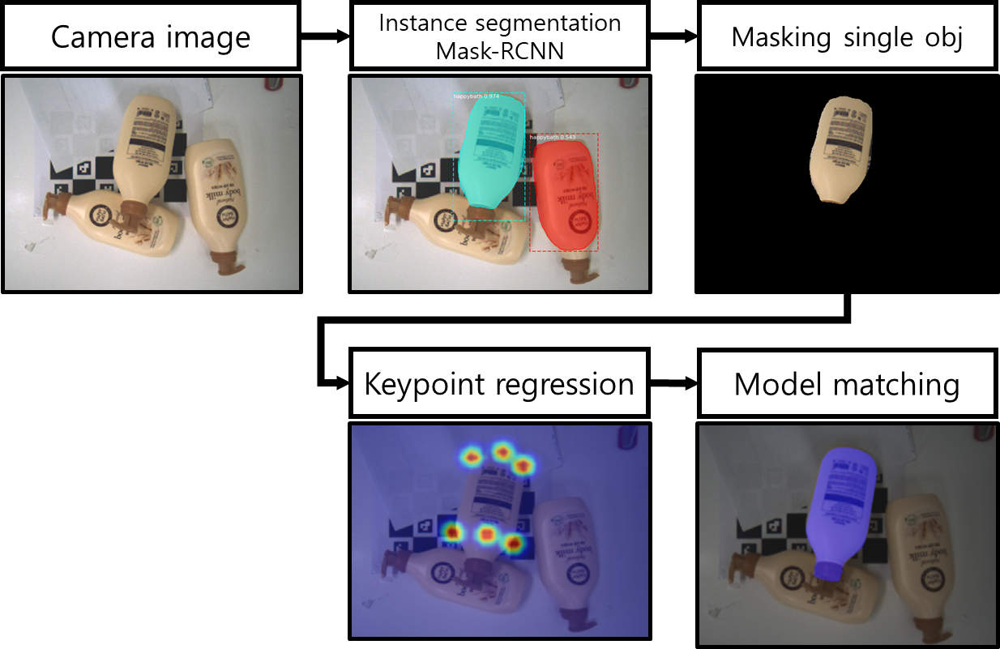
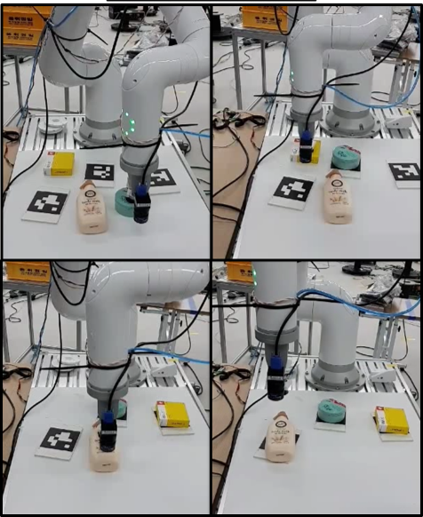

Introduction
June is an amatuer guitarist. Whenever he collaborates with other performers (e.g., drummers, pianists, and vocalists), he felt a bit of frustration because all the people in the room had to wait for him to tune the guitar. Thus, my team decided to develop a device that can automatically tune the guitar, which we named "TuneTunee". When the user plucks the guitar string, TuneTunee recognizes the frequency of the string and rotates the peg for tuning.
Methodology
A. RGB-based Object Recognition
B. Automatic Data Acquisition System
Results
 To go places and do things that have never been done before – that’s what living is all about.Conclusion
TuneTunee tunes the guitar with the accuracy of ± 1Hz for E, A, G and ± 2.5Hz for D, A, E string. The time it takes to tune a pitch is 11.5 seconds in average. Throughout the project, our team members learned various signal processing techonologies like FFT, YIN, and auto-correlation. In addition, we explored many electrical components including OP Amp, ADC, and microphones, comparing the specification of each component from multiple companies. Also, we gained the experience of designing CAD models and using 3D printers.